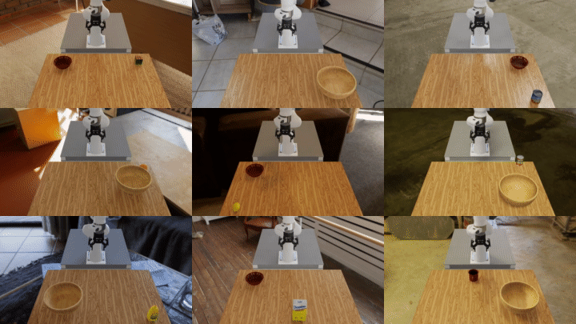

Running a Real Policy#
The zero-action experiments keep the robot still and success rates at zero. In this section we will see an actual model in action, GR00T N1.6, a pre-trained robotic foundation model. No fine-tuning or separate model download is required — the weights fetch automatically from HuggingFace on first use.
Prerequisite: GR00T container
GR00T requires extra dependencies not included in the base Arena container. Rebuild and restart
with the -g flag:
./docker/run_docker.sh -g
Run GR00T closed-loop
Three things change relative to the zero-action baseline:
--policy_typepoints to the GR00T closed-loop policy class and--policy_config_yaml_pathprovides its config (model ID, action chunk length, camera names, etc.)--enable_camerasturns on the robot’s cameras, which GR00T requires for observations--language_instructionsets the natural-language instruction sent to the model
GR00T N1.6-DROID’s default modality config uses absolute joint positions, so use --embodiment droid_abs_joint_pos
instead of --embodiment droid_rel_joint_pos. The command uses --num_episodes rather than
--num_steps so the run terminates on task completion rather than after a fixed number
of simulation steps:
python isaaclab_arena/evaluation/policy_runner.py \
--visualizer kit \
--policy_type isaaclab_arena_gr00t.policy.gr00t_closedloop_policy.Gr00tClosedloopPolicy \
--policy_config_yaml_path isaaclab_arena_gr00t/policy/config/droid_manip_gr00t_closedloop_config.yaml \
--language_instruction "Pick up the Rubik's cube and place it in the bowl." \
--enable_cameras \
--num_episodes 3 \
pick_and_place_maple_table \
--embodiment droid_abs_joint_pos \
--pick_up_object rubiks_cube_hot3d_robolab \
--destination_location bowl_ycb_robolab \
--hdr home_office_robolab
The first run fetches the nvidia/GR00T-N1.6-DROID weights from HuggingFace and caches them
locally; this can take some time. Subsequent runs start immediately. After each episode Arena prints whether the
pick-and-place succeeded. You can swap --pick_up_object and --hdr exactly as in the
zero-action experiments. This functionality can be used to test how the policy adapts to each new
object and lighting condition, as we shall see in the next section.
Sequential batch evaluation across object variations
To measure success rates across several variations of the environment in a single command:
python isaaclab_arena/evaluation/eval_runner.py \
--visualizer kit \
--eval_jobs_config isaaclab_arena_environments/eval_jobs_configs/droid_pnp_srl_gr00t_jobs_config.json
This runs nine jobs sequentially — each varying the object, background, and destination — and reports a per-job success rate. Each evaluation is run without restarting Isaac Sim to save on the startup time.
{kind=link}

9 closed-loop evaluation runs of GR00T N1.6 on the DROID embodiment — each cell varies the pick-up object, background HDR, and destination.#
At the end of the run you will see a job summary table followed by a metrics report:
+---------------------------------------+-----------+-----...-+----------+-----------+--------------+
| Job Name | Status | Policy | Num Envs | Num Steps | Num Episodes |
+---------------------------------------+-----------+-----...-+----------+-----------+--------------+
| droid_pnp_srl_gr00t_billiard_hall | completed | Gr00t.. | 1 | None | 3 |
| droid_pnp_srl_gr00t_blue_block | completed | Gr00t.. | 1 | None | 3 |
| droid_pnp_srl_gr00t_alphabet_soup_can | completed | Gr00t.. | 1 | None | 3 |
| droid_pnp_srl_gr00t_orange | completed | Gr00t.. | 1 | None | 3 |
| droid_pnp_srl_gr00t_lemon | completed | Gr00t.. | 1 | None | 3 |
| droid_pnp_srl_gr00t_tomato_sauce_can | completed | Gr00t.. | 1 | None | 3 |
| droid_pnp_srl_gr00t_mustard_bottle | completed | Gr00t.. | 1 | None | 3 |
| droid_pnp_srl_gr00t_sugar_box | completed | Gr00t.. | 1 | None | 3 |
| droid_pnp_srl_gr00t_mug | completed | Gr00t.. | 1 | None | 3 |
+---------------------------------------+-----------+-----...-+----------+-----------+--------------+
======================================================================
METRICS SUMMARY
======================================================================
droid_pnp_srl_gr00t_alphabet_soup_can:
num_episodes 3
object_moved_rate 0.0000
success_rate 0.0000
droid_pnp_srl_gr00t_lemon:
num_episodes 3
object_moved_rate 1.0000
success_rate 0.6667
droid_pnp_srl_gr00t_billiard_hall:
num_episodes 3
object_moved_rate 0.3333
success_rate 0.0000
droid_pnp_srl_gr00t_blue_block:
num_episodes 3
object_moved_rate 0.0000
success_rate 0.0000
...
Clearly, the low success rates in this table indicate that zero-shot deployment of robotic foundation models is still a challenging problem. Recent results [robolab] show that bleeding-edge Vision Language Action (VLA) models are starting to achieve more reasonable results.
Next Steps#
To go beyond the pre-trained GR00T N1.6 foundation model — for example, fine-tuning on your own teleoperation data — see Imitation Learning for end-to-end imitation learning workflows.